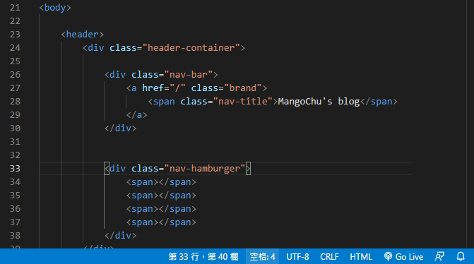
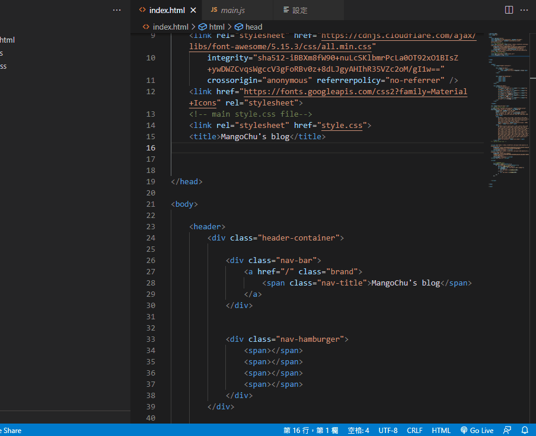
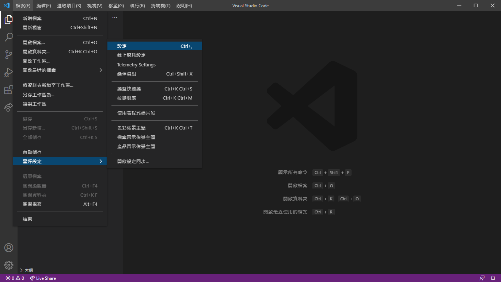
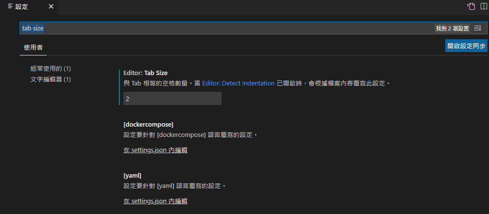
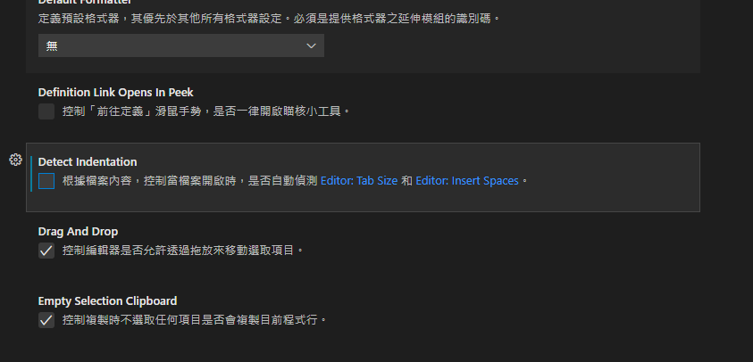

前言
Visual Studio Code（以下簡稱VSCode）是目前大家最推薦的原始碼編輯器，VSCode的好處多多，支援很多程式語言還有可以在內建的擴充程式商店安裝擴充，也有偵錯和代碼自動補全的功能等等，最重要的是免費，所以很多人推薦新手直接學習VSCode。筆者從自學一開始就是接觸VSCode。其他還有很多編輯器（Sublime、ATOM、Dreamweaver、……）筆者自己也沒用過（汗）。
以下會說明VSCode內的一些功能設定方法，擴充推薦未來會再出一篇文章說明。
TAB縮排
VSCode預設的Tab為4個半形空白，但是根據ESLint的標準，在寫JS的時候還是改成2個半形空白會比較好。
（關於ESLint的說明，很推薦大家去看Eddy大的Gitbook中工具篇-ESLint）
首先說明VSCode的自動縮排快捷鍵是：
1 | Shift + Alt + F |
選擇縮排
看向視窗的下方有一個空格：4就代表每一行Tab的縮排是4個空格

若要將其設為2，則是點選空格後，選擇「使用空格鍵進行縮排」，改為2即可。
修改後再使用VSCode自動縮排（Shift+Alt+F）就會變更了

選單設定
另外如果未來不想要每次都要修改縮排設定的話，就到選單設定裡做一些變更：
- 檔案>喜好設定>設定
 - 搜尋Tab size並將其值改為2

並且把Detect Indentation 取消勾選
